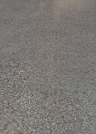

为自然历史博物馆提供照明
在本教程中，我们将介绍如何结合使用 Maya 的原生灯光和 Arnold 的专有灯光，对一个逼真的室内场景进行照明和着色。这包括如何使用 Arnold 设置体积光效果。体积照明是灯光在碰到空气中的灰尘颗粒时发生散射而产生的光束视觉效果。我们还将介绍如何使用发光对象，以及它们与使用 Arnold 的照明工具相比怎么样。最后，我们将了解 Arnold 的一些摄影机镜头选项，以及如何优化渲染设置。
本教程分为以下部分：
- 首先，在 Maya 中打开室内场景模型。在本教程中，我们将使用伦敦自然历史博物馆的模型，该模型可从此处下载：http://www.3drender.com/challenges/（请注意，此网站与 Autodesk 无关，但是提供有关渲染的许多方面的有用信息）。
- 此模型是使用不同的 3D 软件包创建的，因此首先要检查几何体法线是否都朝向正确的方向。否则，等到生成纹理时，您可能会发现不一致的问题（即凹凸贴图的值可能会反转）。
确保在几何体的“渲染统计信息”(Render Stats)中开启“在反射中可见”(Visible in Reflections)和“在折射中可见”(Visible in Refractions)开关。从其他应用程序导入几何体时，这两个开关有时会关闭。
- 现在隐藏窗户，因为我们最初要专注于照明过程。我们可以稍后在着色过程中添加窗户。
- 选择所有几何体，然后从“Hypershade”窗口中指定 standard_surface 着色器。我们将使用此着色器作为测试照明的基础。
Ai 天穹灯光
创建 skydome_light。将其“颜色”(Color)更改为中度蓝色。如果您在选择场景中的几何体时遇到困难，可以在“视口”(Viewport)下减小 sky_radius。您可以将它缩小，但它在摄影机中仍将可见。
使用默认的渲染设置渲染场景。在这个阶段不必担心任何噪波问题。我们会在最后结束时添加另外的灯光，并改进渲染设置。如果画面看上去太暗，则增大 skydome_light 的强度。这将使室内变亮，效果应该与下面的渲染类似。
- 创建 _directional_light_，并旋转它使其从屋顶窗户射进来。将其颜色更改为暖暖的浅黄色，并将其“曝光”(Exposure)增大到 5 或 6 左右。将“角度”(Angle)增大到 1。这样会柔化平行光产生的阴影边缘。启用“使用色温”(Use Color Temperature)，并将“温度”(Temperature)更改为 5500 左右。
- 使用 IPR 进行测试渲染。不必担心外观过于发焦，我们添加材质和纹理后，还需要修改这些值。
Ai 区域光
现在，我们将在窗外创建一些灯光，试着让灯光照射到室内一些较暗区域。这些灯光将表示来自天空的灯光。
- 创建一个 Ai 区域光*。将 *light_shape 设置为“四边形”(Quad)。将其放在其中一个屋顶窗户外面并进行缩放。复制该灯光并放置它们，使它们覆盖所有的屋顶窗户（如果您需要更改任何设置，将它们实例化有助于节省时间）。将它们的颜色更改为浅蓝色，并增大“强度”(Intensity)和“曝光”(Exposure)，使它们填充上面房间中的一些较暗阴影。
大气体积
我们将使用一个聚光灯来创建体积照明效果。
- 创建一个 spot_light*，并将其放置在屋顶窗户的外面。按照与上面平行光相同的方向旋转它。将颜色更改为浅暗黄色。您需要微调“圆锥体角度”(Cone Angle)，以调整 *atmosphere_volume 在场景中的外观效果。在聚光灯的 Arnold 属性中，将“曝光”(Exposure)*增大到一个较高的值，如 20。待场景中的 *atmosphere_volume 正常工作且令我们满意后，我们可以再调低此值。
- 要启用体积雾，请转到渲染设置(Render Settings)，然后在环境(Environment)下单击“大气”(Atmosphere)右侧的菜单。选择 *atmosphere_volume。随后，它应该出现在属性编辑器中。现在正是启动 IPR 的好时机。将颜色更改为土黄色，并降低雾的密度值，使其看上去更加细微。试着稍微降低“衰减”(Attenuation)值。这将使雾随着距离变远而逐渐衰减。要降低场景中体积雾的整体效果，请尝试降低默认的 *camera_contribution 值。更改这些值将降低或增加场景中雾的亮度。
挡光板
- 我们可以使用一个名为挡光板的灯光过滤器，以更好地控制聚光灯的效果以及体积雾在场景中的反应。在聚光灯的属性编辑器中，向下滚动到“灯光过滤器”(Light Filter)，然后从“添加过滤器”(Add filter)菜单中选择挡光板。
- 此挡光板过滤器引入了四个挡光板翻板。每个挡光板翻板都有三个参数。前两个参数控制翻板两端在灯光面上的位置。第三个参数（“边”(Edge)*）控制边的柔和度。在这种情况下，关闭挡光板的 *right_bottom 和 right_edge 将有助于使体积雾光束的边缘更硬。
- 现在，我们可以开始添加一些材质，更好地体会场景会有怎样的外观。创建 standard_surface 材质，并将其指定给场景室内的砖墙。将砖文件纹理指定给 base_color。您也可以尝试将其指定给 *base_weight。这将影响灯光对材质的漫反射组件做出的反应。将 *base_roughness 值增大到 1。这将使材质看起来更柔和、更有粉笔的感觉。将一个凹凸贴图纹理指定给“凹凸贴图”(Bump Mapping)属性。在本例中，使用了三平面投影方法来投影文件纹理。这将在 X、Y 和 Z 方向上投影纹理。
- 创建另一个 standard_surface 着色器，并将其指定给地板。将文件贴图指定给 base_color、specular_color 和“凹凸贴图”(Bump map)*。将 *specular_weight 增大到 0.3 左右将使地板看起来有光泽。增大 specular_roughness 将使地板上的反射模糊，让外观看起来更自然。尝试使用一个较低的值，如 0.2。
彩色玻璃花窗
- 现在我们来创建一个彩色玻璃花窗效果。
有关渲染玻璃曲面的详细信息，请单击此处。
- 选择窗玻璃并为其指定 standard_surface*。将 *base_weight 减小到 0，并将 specular_weight 增大到 1。将彩色玻璃颜色贴图指定给 transmission_color*，并确保将 *transmission_weight 设置为一个较高的值，如 0.9。
- 创建另一个 spot_light*，并将其放置在彩色玻璃窗外面。只要灯光的 intensity 和 exposure 值足够高，您便应该可以看到体积雾效果。如果雾看起来噪波太多，请尝试增大 *spot_light 的“采样数”(Samples)。在这种情况下，“采样数”(Samples)为 4 看起来效果最佳。请注意，雾的颜色受透过玻璃折射的颜色影响。
室内照明
- 现在，我们来处理室内照明。彩色玻璃花窗的旁边有两盏灯。选择玻璃并为其添加 standard_surface。这一次，我们将使玻璃发生折射。在 standard_surface 着色器的 specular 下，将 IOR 更改为玻璃的 IOR：1.5。请记得减小 base_weight 并将 transmission_weight 设置为 1.0。
- 为灯泡指定 standard_surface 着色器。将 base_weight 减小到 0，并将 emission_weight 增加到 1.0。将 emission_color 更改为浅浅的暖黄色。增大“自发光”(Emission)*会给人一种几何体在发光的感觉。我们不想要这种效果，因为我们想在它的位置创建一个灯光，以便可以进行更多控制。确保在灯泡几何体的“Arnold”部分中禁用 *diffuse_reflection 和 specular_reflection。这是因为我们将使用一个点光源向场景中添加照明。
- 创建一个 point_light，并将其放置在灯盏的玻璃内。您可以将灯光放在灯泡内，但是记得要禁用灯泡几何体的 cast_shadows。否则，灯光将无法射出。将点光源的“颜色”(Color)更改为浅暖黄色色调。我们不希望在这种情况下看到任何体积雾，因此请确保将点光源的“体积”(Volume)可见性降低到 0。增大“曝光”(Exposure)值，以查看灯光在场景中的效果。阴影看起来有点过于清晰、过硬。我们需要柔化阴影的外观。

- 要柔化阴影，需要增大灯光的大小。与现实世界中一样，灯光越大，阴影看起来越柔和。在点光源的“Arnold”部分，将“半径”(Radius)增大到 1.0 左右。这时应该可以看到阴影变得更加柔和，衰减得更加逼真。
- 接下来，创建一个 spot_light 并旋转它，使其向上指向第一层的柱子。这将是我们的上照灯。将颜色更改为浅的暖橙色。将 cone_angle 打开到 60 度左右，并增大“半影角度”(Penumbra Angle)，以柔化灯光的边缘。将“强度”(Intensity)和“曝光”(Exposure)增大到 7.0 左右。
自发光
另一种照亮此区域的方法是使用网格“照亮”场景。可以使用 mesh_light 或使用 standard_surface 着色器中的“自发光”(Emission)实现这一点。
- 将 Ai 区域光*替换为一个圆柱体网格，并将其缩放为相似形状。指定 *standard_surface 着色器，并将“自发光”(Emission)*增大到 1。单击 *emission_color 并选择浅暖黄色色调。在颜色选择器中，“色调”(Hue)的下面是“明度”(Value)。如果自发光的亮度不足以照亮场景，可尝试将“明度”(Value)增大到 1.0 以上。本例中使用的值为 4.0。但是，这种技术容易产生噪波。增大 Arnold 的“渲染设置”(Render Settings)中的 diffuse_samples 应该会产生更清晰的结果。请注意，不要将此值设置得过高，否则渲染时间将会增加。上面的渲染使用的值为 4.0。您也可以像我们之前处理灯那样，创建照明与自发光物体的组合。但是，如果您要这样做，请记得禁用圆柱体几何体的“投射阴影”(Cast Shadows)。
摄影机类型
- 为渲染摄影机选择一个位置。选择摄影机，然后在属性编辑器中向下滚动到“Arnold”部分。在 camera_type 旁边，应该可以看到“透视”(perspective)。尝试将其更改为“鱼眼”(fisheye)。这样将得到摄影机搭配鱼眼镜头的外观。
在下面，您可以看到使用鱼眼镜头进行渲染时的差异：
区间限定采样值
现在我们来了解一些提高渲染质量的方法。您可能会注意到，我们的地板材质的反射中出现了一些噪波。这是由背景中两盏灯明亮的值引起的。我们可以在渲染设置(Render Settings)中增加 specular_samples。但是，这会影响整个场景，并会增加渲染时间。我们可以换个方法，改为限制场景中像素的亮度。这样将减少地板的明亮反射，从而减少地板的反射噪波。
- 在 Arnold 的“渲染设置”(Render Settings)中，启用“区间限定采样值”(Clamp Sample Values)。尝试使用值 1.0。如果不起作用，则稍微降低该值。
|  | |
| 区间限定采样值(Clamp Sample Values)：禁用 | 区间限定采样值(Clamp Sample Values)：启用 |
漫反射采样数
下面是使用各种 diffuse_samples 的一些示例。默认情况下，Arnold 使用两个 diffuse_samples*。但是，在示例渲染中，您可以在没有足够全局照明 *diffuse_samples 的较暗图像区域中看到噪波。增大场景中的 diffuse_samples 数量有助于减少这种特殊类型的噪波。这将提高渲染质量。但是也会增加渲染时间，因此请谨慎使用此值。最终渲染的图像是使用 6 个“摄影机(AA)”(Camera (AA))*采样和 3 个 *diffuse_samples 进行渲染的。
| 2（默认值） | 3 | 4 |
本教程到此结束。如果您已自始至终学完本教程，那么鼓励一下自己，然后试着使用这些技术对自己的场景进行照明吧！
建模制作：Alvaro Luna Bautista 和 Joel Andersdon。